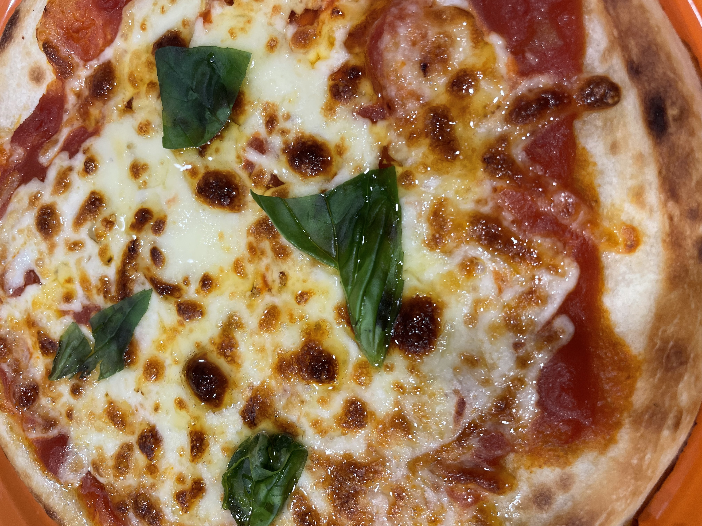
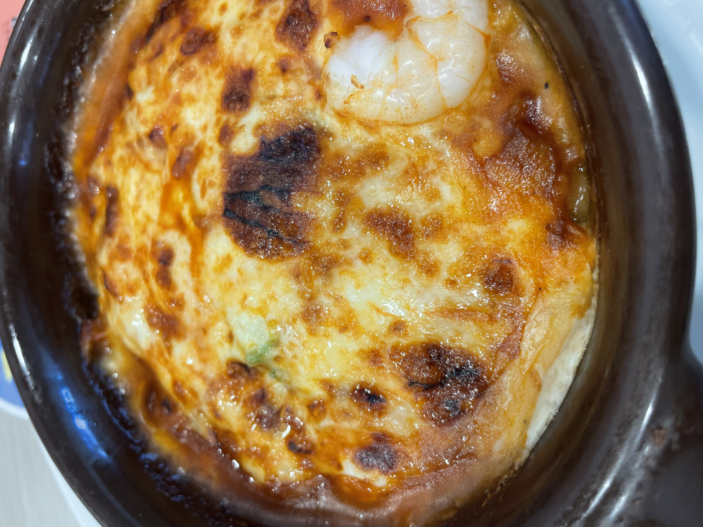
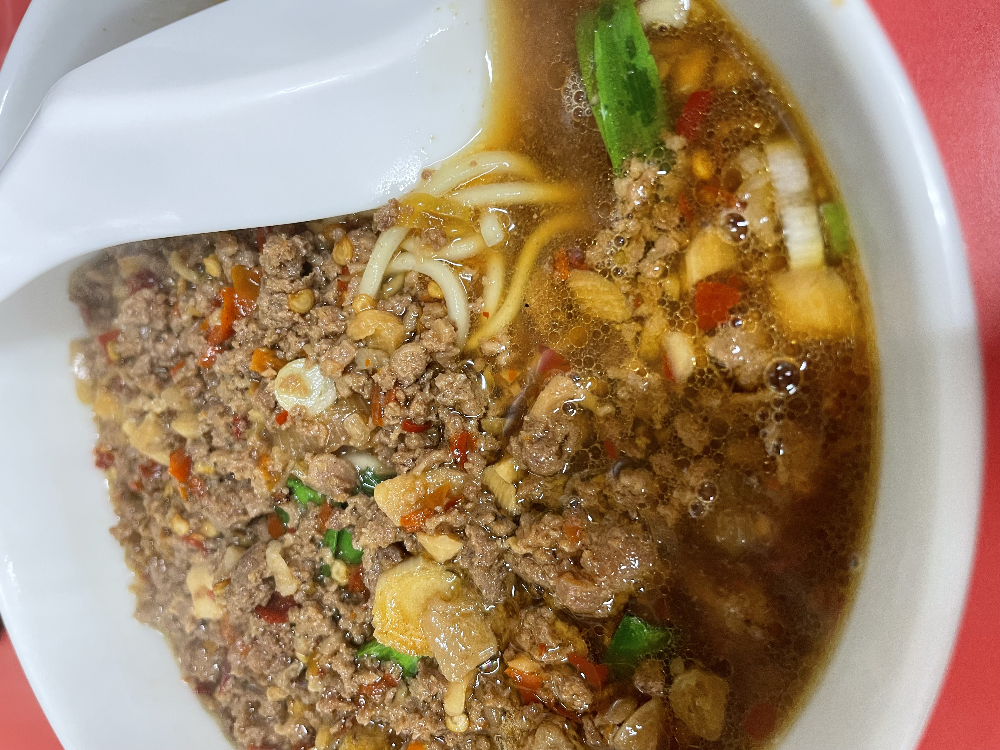
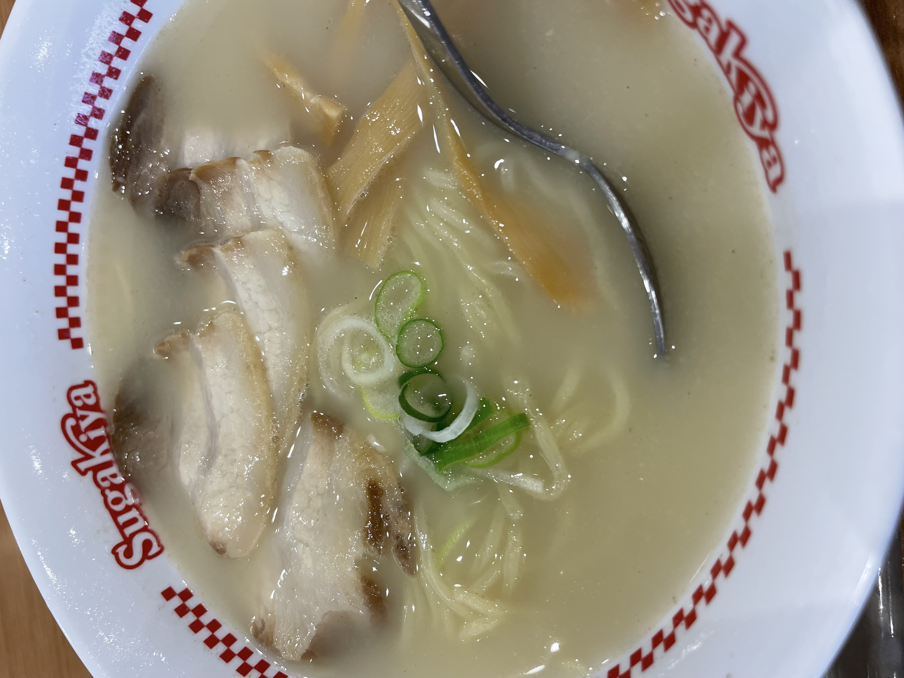

26/2/1 (Posted) TERUO＠teruo
Quite high level. Serving pizza of this quality at this price must be tough for the pizza industry. After eating this, you might think, "Why bother anywhere else?"
■Margherita
⇒★★★⋆ 3.5
■COCO'S (Meito Yomogidai Branch)
■Nagoya City
■About 550 yen
■Ate day: 26/1/31
 (Photo I took)
26/2/1 (Posted) TERUO＠teruo
This is really good. Among Cocos dishes, this might be the best one lol
■Mini Doria
⇒★★★★ 4.0
■COCO'S (Meito Yomogidai Branch)
■Nagoya City
■About 600 yen
■Ate day：26/1/31
 (Photo I took)
26/1/31（Posted）TERUO＠teruo
This store is good enough. I thought so because the Taiwan ramen is about 200 yen cheaper than the JR Nagoya Station branch.
■Taiwan Ramen
⇒★★★★ 4.0
■Misen Nagoya Station (Yanagibashi)
■Nagoya City
■770 yen
■Ate day：26/1/30
（Photo taken by myself）
26/1/30 (Posted) TERUO @teruo
I want to eat it again.
■Meat Ramen
⇒★★★★ 4.0
■Sugakiya(Aeon Mall Nagoya Dome-mae)
■NagoyaCity
■530yen
■Ate day: 26/1/20
 (Photo taken by me)
26/1/30（Posted）TERUO＠teruo
I want to eat it again.
■Ramen Set (Taiwan Ramen + Fried Rice)
⇒★★★★ 4.0
■Shisenrou
■Nagoya City
■750 yen
■Ate day：26/1/14


(Photos taken by myself)
26/1/3 (Posted) TERUO＠teruo
Insanely delicious. A monster. Even a divine 5.0 rating would be fair. Seriously, this is god-tier.
I wonder how many times I’ve been here. Eating the Deluxe Okonomiyaki with spicy sauce and mayonnaise
is a 5.0. Divine. Too delicious. And the extra-spicy Yakisoba is truly amazing. Too good. And the surprising
Jaga Butter. A dish that surpasses Jaga Butter itself.
The Deluxe Okonomiyaki was so good that I ordered another one at the end. The flavor of the broth, or rather,
the seafood taste, is incredible. The world’s best okonomiyaki. If there’s something better, please let me know.
We ate as a pair.
Absolutely amazing. I might rate it 5.0, but I’ll stick with 4.5.
100% going again. I’ve been coming here forever.
And seriously, the spicy sauce and mayonnaise are essential.
■Deluxe Okonomiyaki: 2 pcs × Extra-spicy Yakisoba 2-spice large portion (Meat, Shrimp, Squid) × Jaga Butter
(×Absolutely, under any circumstances, put spicy sauce and mayonnaise on the Deluxe Okonomiyaki.)
⇒★★★★ 4.5
■NanjyaMonja
■NagoyaCity
■4350yen(Deluxe Okonomiyaki; 1200yen × 2 = 2400yen)
■Ate day: 26/1/3


(Photo I took)
26/1/2 (Posted) TERUO＠teruo
It was seriously delicious. It tastes like happiness. How good was it? So good that it made me want to try making doria at home.
Compared to when I ate doria at Cocos on 25/12/2, it felt like this one had more sauce. If you compare the photos, you can probably see the difference. That might be one reason why it was so good.
■Mini Doria
⇒★★★★ 4.0
■COCO'S(Meito Yomogidai branch)
■NagoyaCity
■About600yen
■Ate day: 26/1/2

(Photo taken by me)
26/1/1 (Posted) TERUO @teruo
When I took the first sip of the soup,it had impact.
Somehow,it has a gentle flavor.
■Meat Ramen (× Start by taking a few spoonfuls of the soup first.)
⇒★★★★ 4.0
■Sugakiya(Aeon Mall Nagoya Dome-mae)
■NagoyaCity
■530yen
■Ate day: 26/1/1

(Photo taken by me)
25/12/31（Posted on）TERUO＠teruo
good. That reassuring, comforting taste.
■Ramen with Meat
⇒★★★★ 4.0
■Sugakiya (Nagoya ESCA)
■Nagoya City
■590yen
■Ate day：25/12/30

(Photo taken by me)
25/12/29（Posted） TERUO@teruo
High Quality.
■Ramen set（Tonkotsu ramen＋Tenshinhan）
⇒★★★⋆ 3.5
■Shisenrou
■Nagoya City
■780yen
■Ate day: 25/12/27


(Photo taken by myself)
25/12/29（Posted） TERUO@teruo
4.0.
■Ramen set（Taiwan ramen＋fried rice）
⇒★★★★ 4.0
■Shisenrou
■Nagoya City
■750yen
■Ate day: 25/12/26


(Photo taken by myself)
25/12/29（Posted） TERUO@teruo
In the end,I want to eat it again..
■Ramen set（Taiwan ramen＋fried rice）
⇒★★★★ 4.0
■Shisenrou
■Nagoya City
■750yen
■Ate day: 25/12/22


(Photo taken by myself)
25/12/5（Posted） TERUO@teruo
Good.
■Taiwan Ramen
⇒★★★★ 4.0
■Shisenrou @ Nagoya City
■600yen
■Ate day: 25/12/5

(Photo taken by myself)
25/12/2（Posted） TERUO＠teruo
Gently yummy.
■Mini Doria
⇒★★★★ 4.0
■COCO'S （Chain） @ Nagoya City
■About 600yen
■Ate Day: 25/12/2

(Photo taken by myself)
25/12/1（Posted） TERUO＠teruo
Yummy!! I love this.The soup is a monster.
With the Meat Ramen at 530 yen, I’m already happy. So damn good.
■[Super Ramen] Meat Ramen(×Start by drinking about five spoonfuls of the soup with the spoon provided. That’s where it begins.)
⇒★★★★⋆ 4.5
■Sugakiya (AEON Mall Nagoya Dome-mae) @ Nagoya City
■530yen
■Ate Day: 25/12/1

(Photo taken by myself)